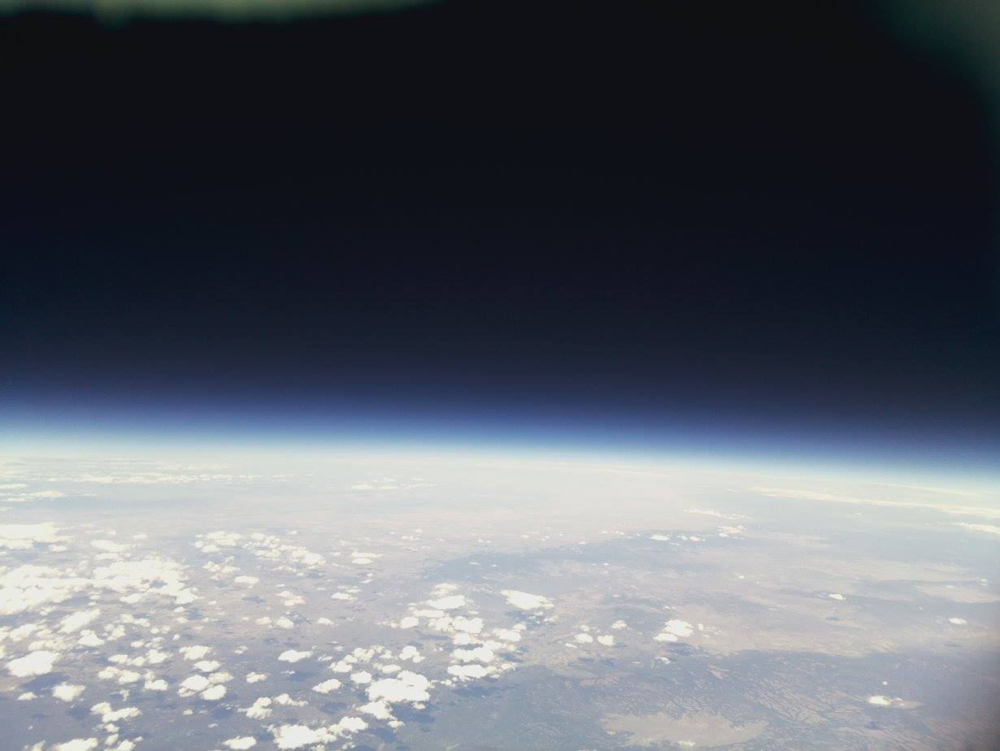
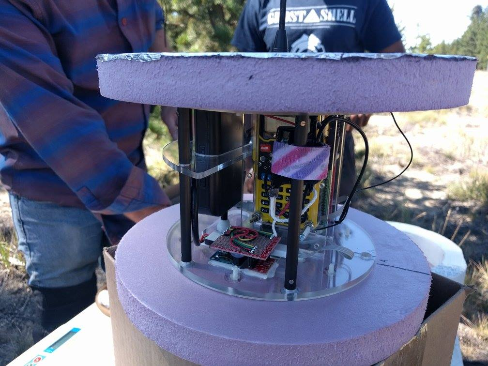
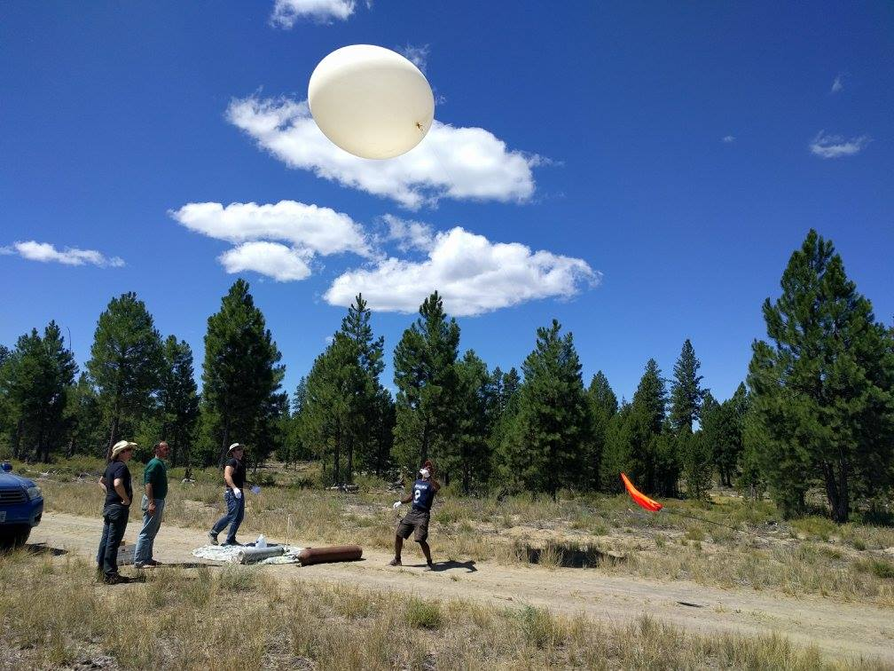
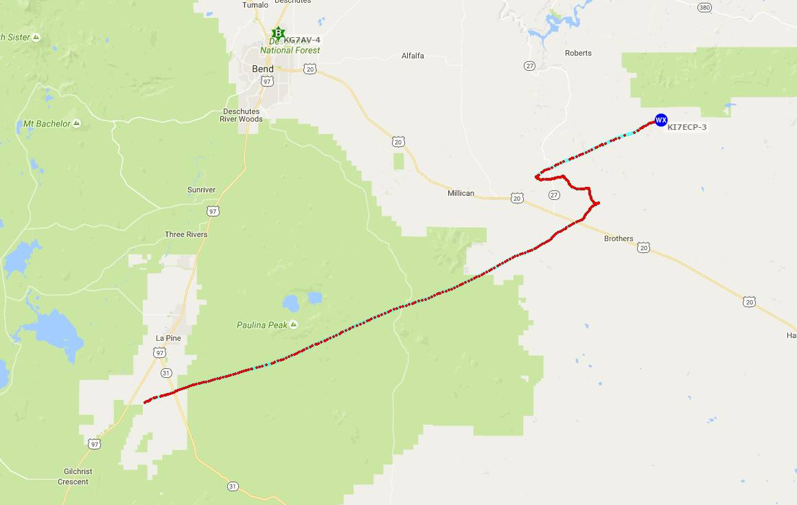
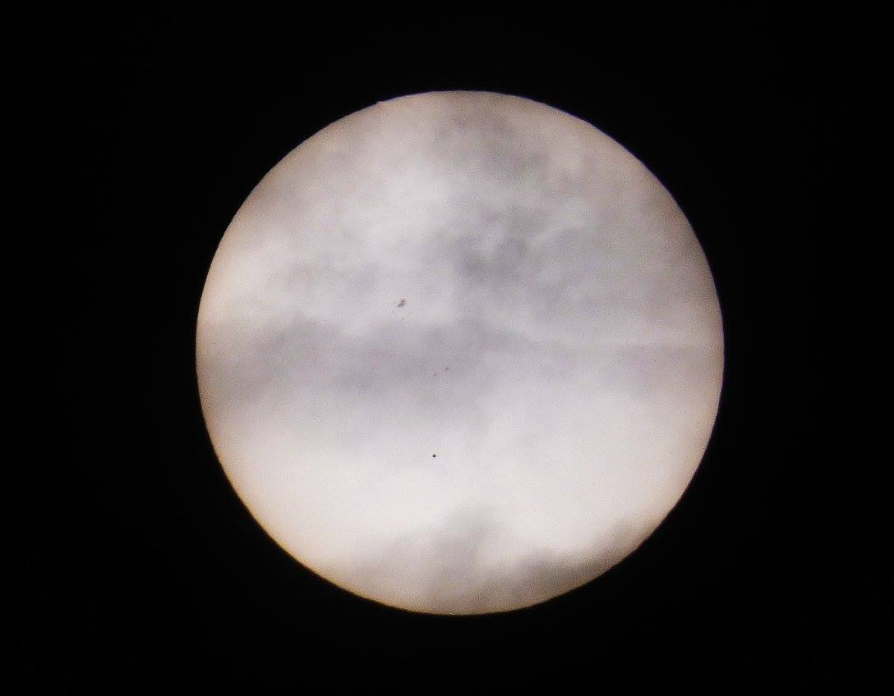
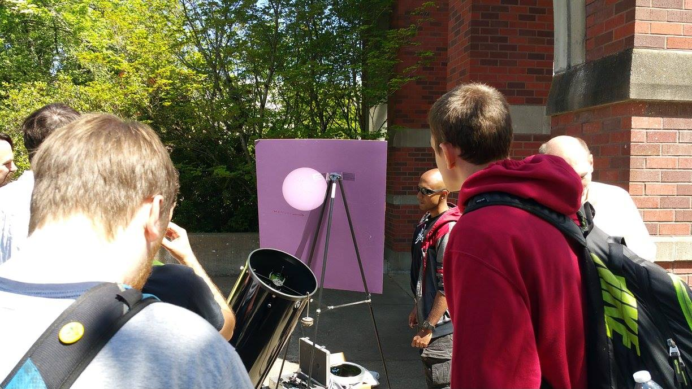
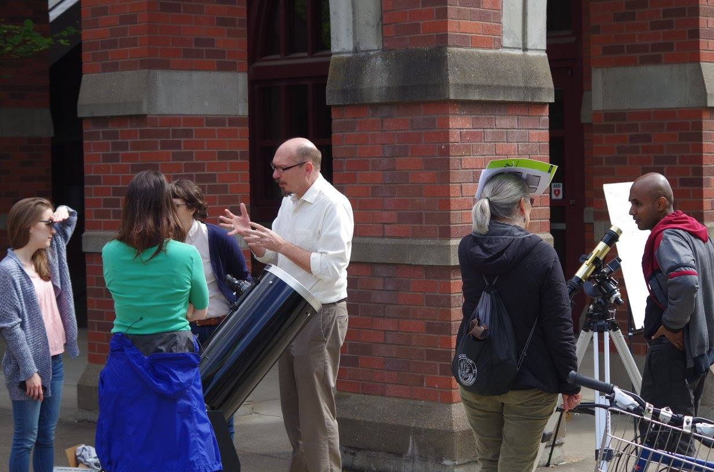
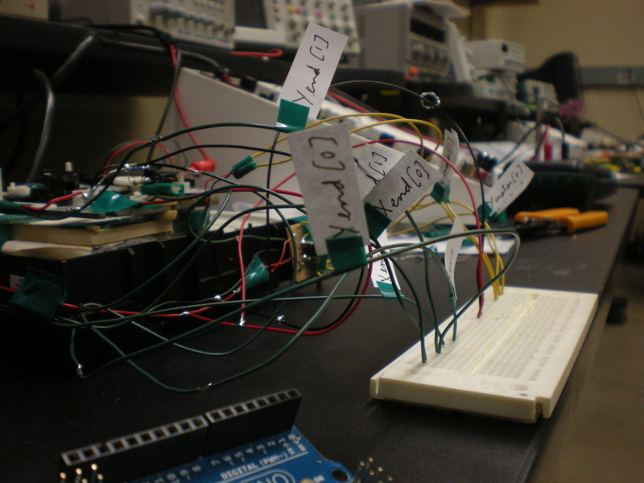
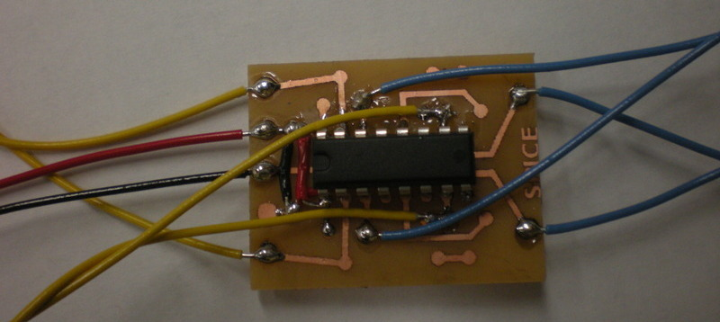

Miscellany
Nearspace Weather Balloon

In July of 2016, I bumped into the Eugene Maker Space at the local faire through a friend (Dean Walton) on campus. They (Rick Osgood, Weston Turner) were showcasing a payload that they intended to send up above the stratosphere tethered to a weather balloon. They had my attention.

The payload consisted of a raspberry pi, a handheld programmable radio, a TNC inbetween the two, a camera, and a GPS module. While most such payloads include a cellphone, the FCC frowns on that practice. This might have something to do with catching too many cell towers at once. This one however was programmed to transmit it's coordinates via standard APRS radio packets. I offered my BME280 weather chip breakout board to the setup so we could monitor temperature, pressure, and humidity as well. The chassis was designed and put together by Jeffrey Graman.

Kevin Forsyth also designed a second payload with several raspberry pis' and cameras as a panoramic photoshoot device. There exist prediction applets that chart expected balloon paths after taking payload weights, balloon size, amount of Helium, and date/time/location of launch as inputs. We launched ours from central Oregon a few hours later than scheduled. The path didn't drift significantly. We had to give chase in our cars (and eventually on foot) for nearly four hours, all the while receiving live packets from the payload and displaying the coordinates on a map in our laptops (and radioing information to the rest of the convoy). It turns out that others in neighboring towns (including Eugene) had also received strange APRS packets with ridiculous altitude values.

The balloon popped above 80,000 feet. The chassis was well insulated, rendering the temperature and pressure data only contextually interesting. The best part of the trip was to actually catch visual sight of the balloon at its highest point (the balloon expands in size as it rises into thinner air), and watch it burst (suddenly disappear). We lost radio contact with it for a while during the parachuted descent, but recovered it as we got closer to its expected drop point. Finding it dangling off of a tree branch was pretty cool too. The EMS will be planning another launch with an expanded team, a better chassis, and a more sophisticated payload (with external sensors). We're waiting for the weather to get better.
Transit of Mercury

(Photo credit: Dean Walton)
On the 9th of May 2016, the planet Mercury happened to slowly transit across the face of the Sun (from Earth's perspective). Prof. Scott Fischer, Dean Walton, Erik Keever and I decided to deploy two telescopes out in the open on campus. One of them employed interference-based bandpass filters at the Helium alpha line (667.8 nm). The other was a Newtonian type, 10" Dobsonian scope, and was used to project an image of the Sun onto a board. The Sun was bright enough for a clean image even in broad daylight.

(Photo credit: Dean Walton)
The transit was already in progress as the Sun rose on the west coast. The entire transit took 8 hours to run through its course. We were out until about 12 PM local time. It managed to attract some public attention.

(Photo credit: Dean Walton)
Unlike Venus, mercurial transits are relatively more common. They occur about 13 to 33 years apart. Despite the orbital period of Mercury being about 88 Earth-days, the planar tilt of its orbit is opposite that of the Earth. Its day-night cycle is tidally locked to its orbital period to a ratio of 3/2. The planet's silhouette was about 1/160th the diameter of the Sun. A bit of an anti-climax, really, unless you know what you are looking at.
CD-drive shenanigans

I do some volunteer work for SPICE Camp every summer, as is mentioned elsewhere. And one of the most loved exercises is the one where we get the kids to take old, surplused computer towers apart for parts. Most of them have never seen the guts before, and they are natural destroyers of things. Back in 2013, during a routine brainstorming session on possible new activities for the camp, we (Wes and I) attempted to create a project where parts from CD-drives and hard disks (the voice coil or readhead) could be put together to make 2D plotters and scanners. We ended up scrapping the idea on account of the design being to unreliable and time consuming. But we did successfully create some prototypes.
Linear stages are a pain to deal with. Having dabbled in trying to make a reprap, I am intimately familiar with that pain. The drive trays are controlled by DC motors. Some read heads are controlled by DC motors, and others by stepper motors. To work with DC motors and get an estimate of distance travelled, we used photogates (IR interrupters) and black patterns printed onto transparencies.

We had end-stops for edge-limit detection, and a startup, full travel routine to estimate maximum range for both directions. All the "images" were ascii files with a dot for blank space, an "x" for marked pixel, and an "n" for new line. The scanner simply used a photodiode to measure reflection from a laser pointer. The plotter however, used a hard-drive voice coil to lift and drop the pen. This was a huge mistake, as it was heavy, and tended to jerk the whole light device out of alignment. The drop and lift angles weren't vertical either, and voice coils are a huge power draw. All of these were controlled by custom-etched motor driver boards based on the H-bridge LM293D chip.

The whole assembly is held together by electrical tape and epoxy. Scanners would have communicated ASCII over serial to plotters. We would have had half the teams build plotters and the other half, scanners. We had even worked out how to power the whole thing using ATX power supplies (also pulled out of the computer towers). But the project became too complicated for the scope of the camp. They could be reworked into standalone camps though. Hit me up if you need the code.
Transit of Venus
(Photo credit: Kaori Morimoto)
On the 5th of June 2012, the planet Venus happened to slowly transit across the face of the Sun (from Earth's perspective). Erik Keever and I decided to deploy a Cassegrain telescope out in the open on campus and project the Sun onto a whiteboard. The spectacle lasted all day, and attracted much public attention. The Sun was bright enough for a clean image even in broad daylight. The equatorial mount helped. A tracking motor would have helped even more.
(Photo credit: Bonnie Sephris Dominguez)
The event is said to occur in pairs about 8 years apart, but the pairs are seperated by about 243 years. So the next one will occur on the 10th of December in the year 2117. Can't wait!